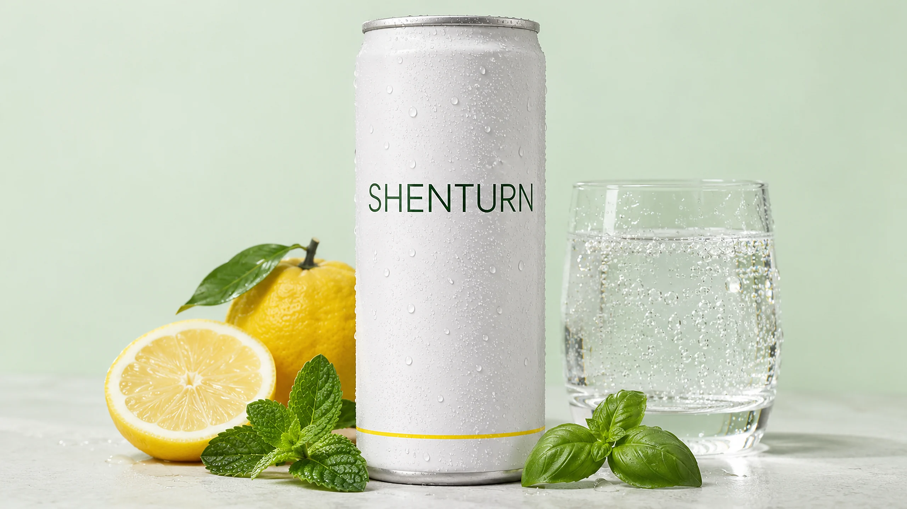
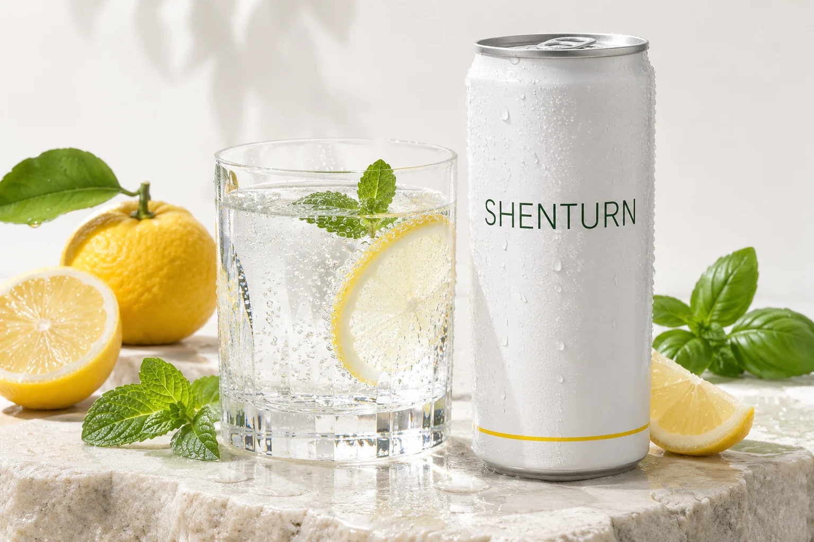
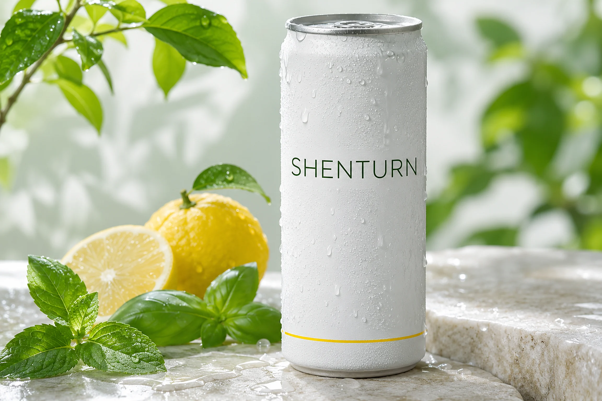
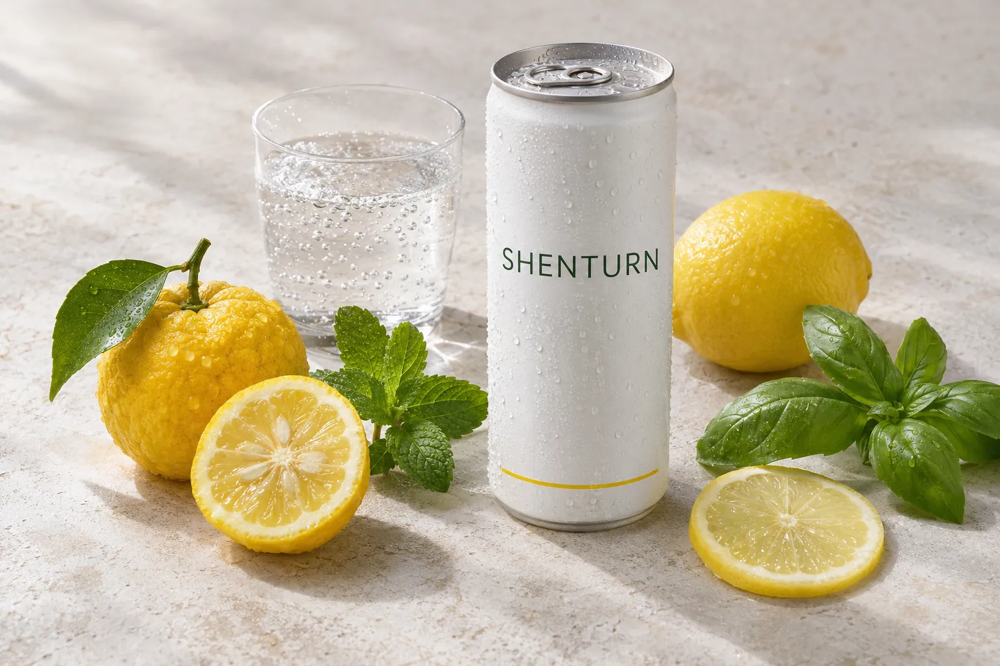
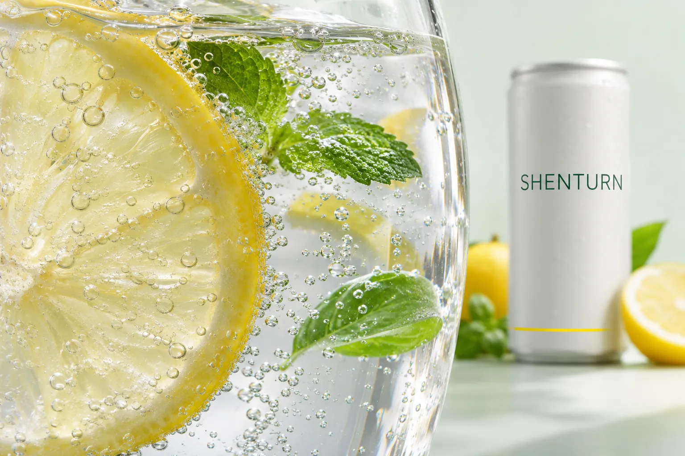
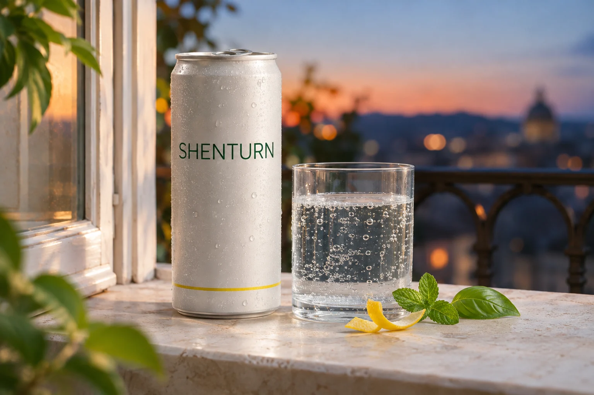
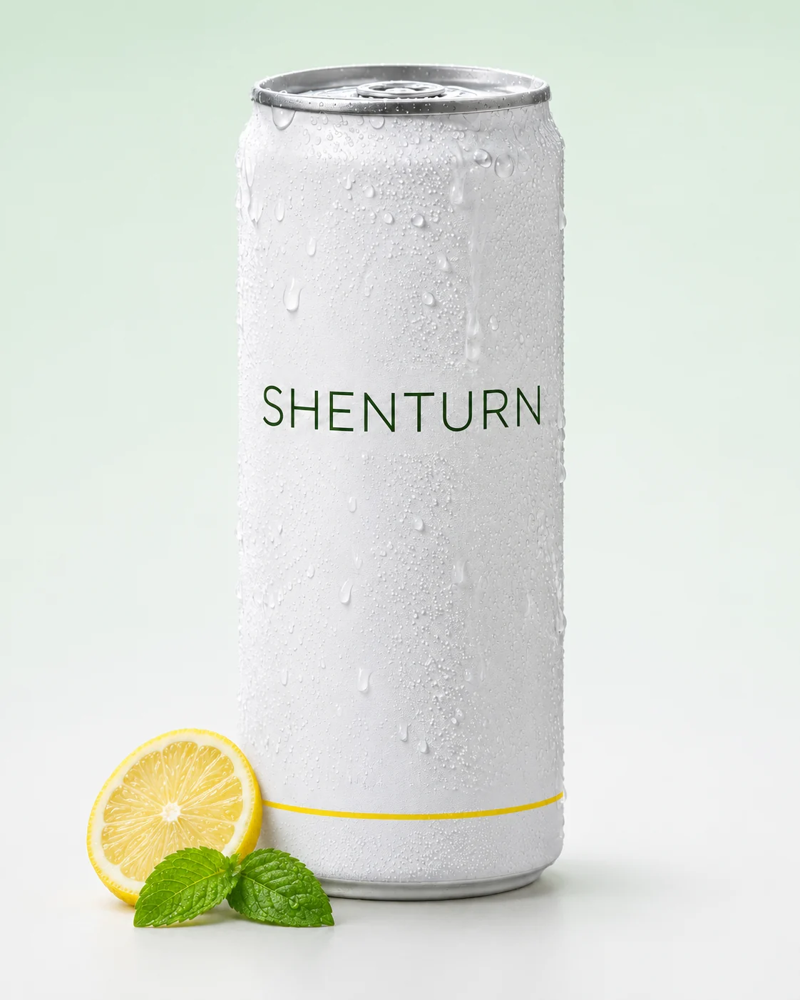

01 夕方
17時。仕事は終わったのに、
頭だけがまだ動いている。
画面を閉じても、考えごとは閉じてくれません。甘い飲みものは重く、水では少し物足りない。そんな夕方のために、この一本を作りました。


02 特長
飲んだあと、軽い。
ひと口目は、ゆずとレモンの香りが立ち上がり、すぐに消えていきます。口の中に甘さが残らないので、次のひと口も、そのまま軽く進みます。
03 素材
香りは、
4つの素材から。
- ゆず
- 最初に立つ、はっきりした柑橘の香り。
- レモン
- 後味を引き締める、きれいな酸味。
- ミント
- 鼻に抜ける、冷たく澄んだ涼しさ。
- バジル
- ほんのりと、青い葉の奥行きを足します。


色をつけない。香りだけで、飲ませる。

04 シーン
一日の切り替えに、
ちょうどいい。
- 仕事を終えた夕方席を立つ前に、まず一杯。
- 食事の前香りで口の中を整えてから、食卓へ。
- 夜の読書や、ひとり時間甘くないので、遅い時間でも重くなりません。
05 飲み方
冷やして、
グラスで。
- よく冷やす冷蔵庫でしっかりと。冷たいほど香りが澄みます。
- 氷を入れたグラスに注ぐ氷に当てず、グラスの内側に沿って静かに。
- レモンを一片、浮かべるひと口目の香りが、さらに立ちます。
06 商品について
シェンターンSHENTURN
- 内容量
- 350ml（缶）
- 原材料
- 炭酸水、香料（ゆず、レモン、ミント、バジル）
- カロリー
- 0kcal（100mlあたり）
- 価格
- 1本 ¥180／24本入りケース ¥3,980（税込）
- 販売
- 全国のスーパー・コンビニ、公式オンラインストア
※架空の商品です。掲載の内容・価格・販売先はすべて架空です。
